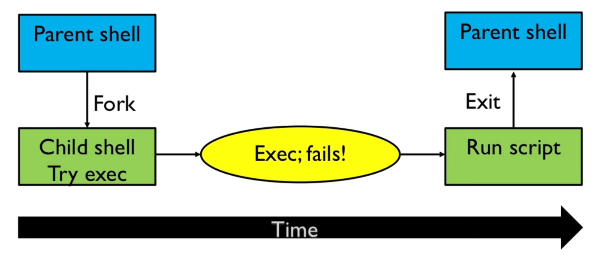

Intro
Table of Contents
History
- shell scripting was deved in the context of UNIX from Bell Labs
- research-oriented, no pressure to ship product
- UNIX devs were the users
- deved to solve their problems
- freedom to experiment and rewrite as needed
- no-nonsense, users were computer scientists
- besides functionality, quest for elegance
The not-so-good:
- utilities were often incosistent
- a leading minus for options was not always used (
tar) - different regex syntax
- documentation often too terse
Small history:
- 1970-1976: Thompson Shell
- 1975: Mashey Shell for PWB UNIX
- 1977: Bourne Shell for V7 UNIX
- 1979: Berkly C-Shell (csh)
- 1986-1993 and on: Korn Shell (ksh86, ksh88, ksh93)
- 1988 and on: GNU Bash (Bourne Again Shell)
- many other Bourne Shell clones in the wild
- POSIX Shell Standard: 1992 and ongoing
Software tools principles
- programs should be specialized tools
- avoid "one program to urle them all"
- combining tools (with pipelines and shell "glue" code) often gets the job done wihtout having to write a new full program
- popularized in the Kerninghan & Plauger books
Do one thing well
Programs are easier to:
- write and get correct
- document
- understand and use
Examples:
cat(the original) only concatenated filescpcopies files,mvmoves and renames them - they are 2 different programs- contrast to VMS COPY command: creates new file from one or more existing files; copy input file to output file; concatenate 2 or more input files into single output file; copy a group of input files ot a group of output files;
Process lines of text, not binary
- easy to process with existing and new tools
- can be edited with any text editor
- portable accross networks and machine archs
Example: list of unique login names
who | awk '{print $1}' | sort | uniq
nasreddin
Use Regular Expressions
Provide powerful text matching and substitution
2 flavors standardized by POSIX:
- Basic Regual Expressions (BREs):
grep,sed, … - Extended Regular Expressions (EREs):
egrep,awk, …
Example:
who | sed 's/[^[:alnum:]].*//' | sort | uniq
nasreddin
(often more than one way to do things)
Default to std in/out
When no files are named on the command line, use std in and out
- simplifies writing programs
- lets you hook programs together with pipelines
- encourages programs to do one thing well
Such programs are called "filters" (by analogy to water pipelines)
Don't be chatty
- status messages mixed with output can only confuse downstream programs
- you asked for it, you got it (no "are you sure?")
Use the input format for output
If your text is structured, after processing, write the same format for output as you read for input. (this is something of a later principle adopted by the community)
- allows to build specialized tools that work together
Example: The Portable Network Graphics (PNG) suite:
pngtopnm x.png | pnmflip -leftright | ppnmrotate 45 | pnmtopng > y.png
Let someone else do the hard part
- use existing tools to select data (
grep,awk, …) - sort it, if that makes sense
- if necessary, write a specialized tool to finish the job
Detour to write specilized tools
- sometimes, there is no existing too, so write it!
- but, stop and think:
- is what you want to do useful to others?
- can it be generalized?
- if so, try to design and write it as a general purpose tool
- ofter, you can use a scripting language to write your tool, be it Awk, Perl, Python, Ruby, or shell!
Self contained scripts
Creating a script
Lets say we want to count the number of login sessions on our computer… (here there's just me)
understand tools you can use
whoallows us to see who is logged in:
who
nasreddin tty7 2025-08-18 18:34 (:0) nasreddin pts/1 2025-08-18 18:34 (tmux(1307).%0)
wcallows us to count words but also lines!
ls | wc -l
2
write it
Use a text editor and save it to a file.
Using who and wc, we can:
who | wc -l
2
Lets save that to a file:
echo "who | wc -l" > scripts/nusers
make it executable
chmod +x ./scripts/nusers
run!
./scripts/nusers
3
Lets change our script
We can enhance it by printing unique logged in users
We can edit the file using any text editor…
who | awk '{print $1}' | uniq | wc -l
1
Now we see that there is only me logged in
How simple script works

- You type the command in the parent shell
- Parent shell forks to a child shell and child shell tries to run the command with
exec - If the command fails (it's not a binary), child shell assumes that the command must be script and runs it
- When it's done, it exists to the parent shell
Interpreter in a script
Shell scripts can be as simple text files containing shell scripts.
But this only works if the script is in the same language as your interactive shell
- Binary executables start with a "magic number" indicating the type of object file
- Executable scripts start with a textual "magic number":
#! - The full format:
#!/path/to/interpreter [<one_argument>] - One optional argument may be supplied
- Some systems have small limits on the path name length
man and help
These are our friends in learning shell scripting.
help [COMMAND]displays a help page for built-in bash commandsman [COMMAND]diplays a manual for system utilities